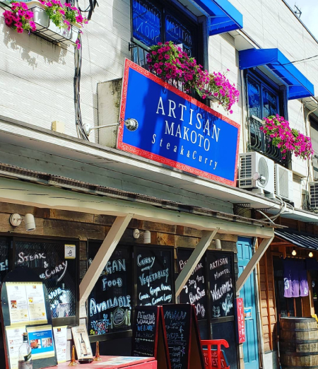

Access
アクセス
- 東急田園都市線二子新地駅の正面改札を出て左へ159m直進。1つ目の信号をまっすぐ渡り右手にお店があります。(徒歩2分)
- 二子玉川駅正面改札を出て左手246を川崎方面へ進み、橋を渡って2つ目の信号を右に進み右手にお店があります。(徒歩12分)
Shop
店舗情報

アルチザンマコト/ARTISAN MAKOTO
- ◆営業時間◆
- ランチ 11:30~14:00
ティータイム 14:00~16:00
ディナー 17:00~22:00(ラストオーダー21:00) - 水曜定休(祝日の場合は営業)
住所 » 神奈川県川崎市高津区二子1-1-23
TEL » 080-7826-2073
❀ご予約やお問い合わせは電話でご連絡ください❀
- Lunch 11:30-14:00
Tea-time 14:00-16:00
Dinner 17:00-22:00(L.O.21:00) - We are regularly closed on Wednesday. (Open on public holidays)
〠213-0002 / 1-1-23 Futako Takatsu-ku Kawasaki Kanagawa
☎ 080-7826-2073
※Please contact us by phone for reservations and questions.